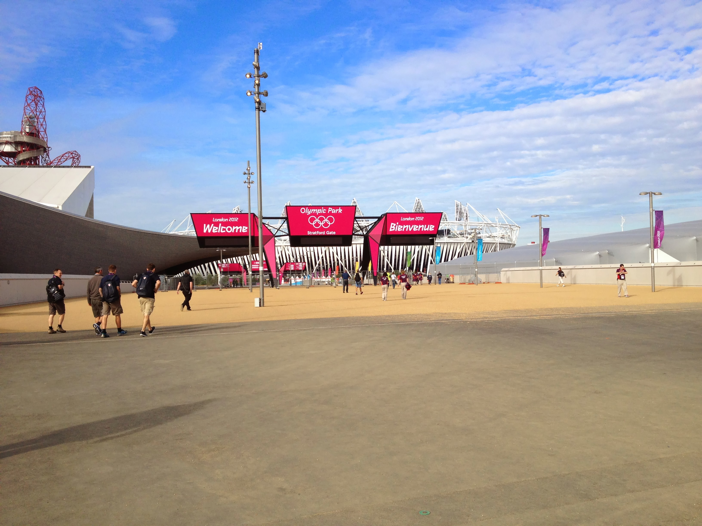

Shift One Gold Team Automatic car
Wednesday 18th July 2012
To get into the FDO now that it is Games time, you have to go into the Olympic Park, and security was in full
swing. I was cleared through to the Park 30 minutes before my first shift started, so had time to take a photo of the walkway over to the
Olympic Park proper before chcking in.
I checked in with Workforce, who handed over a green wristband, a bottle of water, a meal voucher, a newsletter plus a cool bag to keep our
lunch in. I then checked in with the Fleet team who handed over a clipbpard folder, a radio and a car key with fuel card fob. Trying to carry
all that at once was interesting. Decided to bring in the big uniform bag from now on as the uniform bag itself was too small to hold all
that clobber plus my stuff.

Fleet told me that having had breakfast, I should head off to the Olympic Family Hotels ie Park Lane. Breakfast was a choice of a bacon and
cheese roll or a scrambled egg and mushroom roll. I went for the latter. Lunch was a large filled roll, a piece of fruit, a granola bar and an
additional drinks bottle. No sign of any team leader to tell me what to do so, once breakfast was finished, I headed over to the garage to
check out the car. Radioed in that I was leaving and handed over the paperwork
The first problem was finding my way out of the Olympic Park. On the Venue training day we had turned left out of the garage but that is now
blocked off to give pedestrian access at Stratford Gate to the Olympic Park. On the Role training day we turned right but when I did that the
way out was blocked. I subsequently found out that was the back of the Olympic Village. I eventually followed my nose and found my way out of
the Park via the Eton Manor exit.
Set the Sat Nav for the Hilton Hotel on Park Lane because the Curzon Street staging area wasn't on the list of DORS destinations. Got a bit
lost at the end but spotted people in volunteer uniforms and stopped to ask where the Olympic Fleet Holding (OFH) staging area in Curzon Street
was. Was told it was around the corner, but to stay where I was in the pick up zone as there was room. Great way to jump the queue. Thank God
nobody waiting around the corner in the queue proper saw me or they'd have had my guts for garters.
I spent a bit of time chatting to a Community Police officer, the Fleet Transport team girl and two fellow drivers. A couple of people in front
of me got customers going out to the airports. A guy with accreditation tried to get a lift with 2 people who didn't have any, and was politely
rebuffed. An official type needed to get to Harlow to the doping centre, but wanted to use a T£ car as their T2 driver was AWOL, but whilst
control were getting me the postcode, the missing driver showed up.
I ended up driving around the Park Lane family hotels with a volunteer from the transport team in the back pretending to be a customer so the
meeters and greeters at the various hotels could practice their routines. That meant I had to join the back of the Curzon St. queue, when
finished. Spent the rest of the shift chatting to fellow drivers and transport team guys. Did get a cabbie shouting abuse at us at one point.
He wanted to know what qualifications we had to be taking his business. We smiled politely at him and said nowt. Was called back to to the FDO
as shift end time approcahed. Had to use non DORS sat nav as DORS was playing up, again.